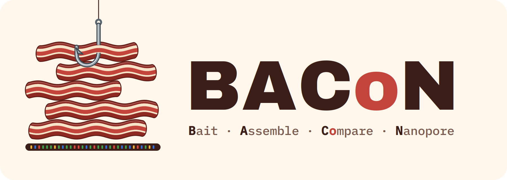

BACoN extracts the Nanopore reads matching a reference sequence (typically an organelle genome) from many samples, assembles them, and compares the samples: SNP distances and a tree. Source code · Documentation
Example reports
Bundled example
Four simulated samples with known SNPs (walkthrough).
Tutorial: 28 potato cultivars
Public data, BioProject PRJNA807056 (walkthrough).